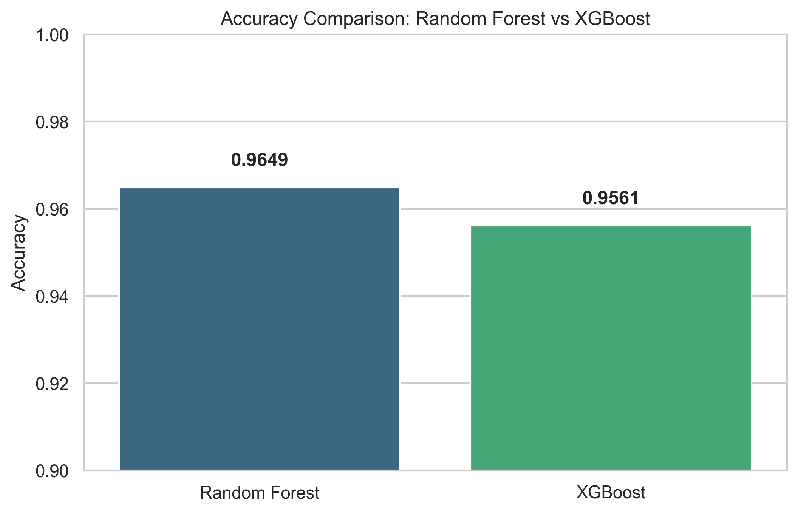
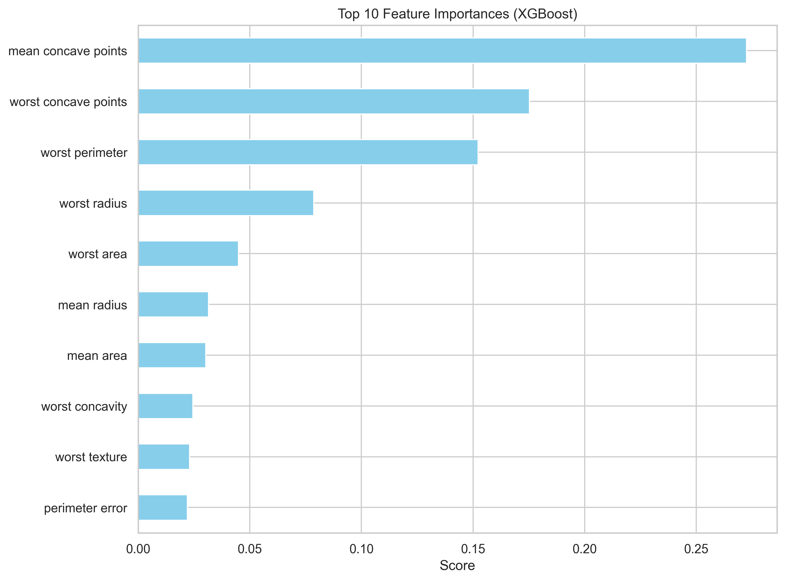
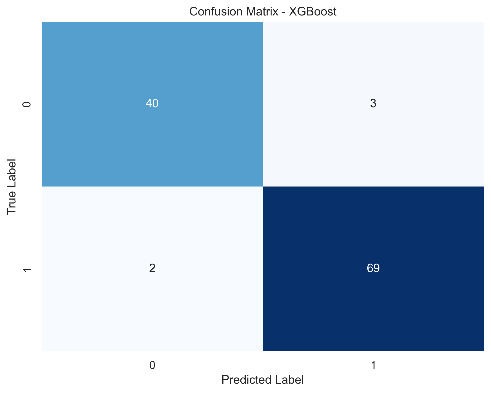

By Jyothi Koushik
| Metric | Random Forest | XGBoost |
|---|---|---|
| Accuracy | 0.9649 | 0.9561 |
| Precision (Class 1) | 0.96 | 0.96 |
| Recall (Class 1) | 0.98 | 0.97 |
precision recall f1-score support
0 0.95 0.93 0.94 43
1 0.96 0.97 0.97 71
accuracy 0.96 114
🔍 Interpretation: Random Forest performed slightly better here because it is a "bagging" method. On smaller datasets like Breast Cancer Wisconsin (569 samples), the parallel nature of Random Forest provides a natural smoothing effect that prevents it from chasing noise in the data.
💡 Insight: In real-world ML decision-making, this confirms that more powerful does not always mean more effective. XGBoost’s aggressive gradient-based optimization is a precision instrument that requires more data to calibrate its weights without overfitting.



Below is the complete Python script used to train the models and generate the visual assets above.
import xgboost as xgb
from sklearn.ensemble import RandomForestClassifier
from sklearn.datasets import load_breast_cancer
from sklearn.model_selection import train_test_split
import matplotlib.pyplot as plt
import seaborn as sns
# 1. Load Dataset
data = load_breast_cancer()
X_train, X_test, y_train, y_test = train_test_split(data.data, data.target, test_size=0.2)
# 2. Train Random Forest
rf = RandomForestClassifier(n_estimators=100)
rf.fit(X_train, y_train)
# 3. Train XGBoost
xgb_model = xgb.XGBClassifier(n_estimators=100, learning_rate=0.1)
xgb_model.fit(X_train, y_train)
# 4. Generate Visuals
# - Accuracy comparison barchart
# - Top 10 Feature Importances
# - Confusion Matrix heatmap